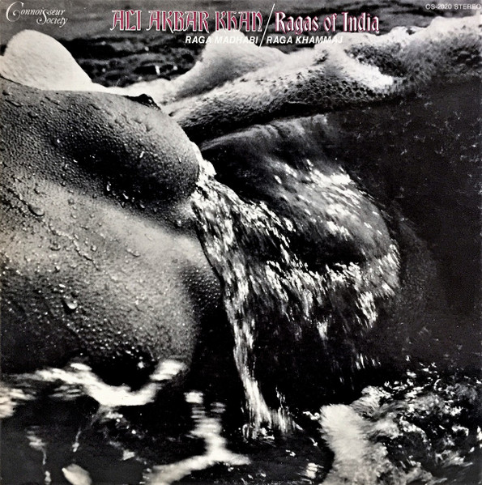

LP
Ragas Of India (Raga Madhabi / Raga Khammaj)
Ali Akbar Khan
Media Good (G)
Media: Good (G) · Sleeve: Poor (P)
CA$14.80
Discogs SuggestedCA$108.47
Discogs MedianCA$108.47
Discogs HighCA$108.47
- Physical Copy ID
- BB-LP-170
- Year
- 1970
- Label
- Connoisseur Society
- Catalog #
- CS-2020
- Country
- USUS
- Genre / Style
- Folk, World, & Country · Indian Classical, Hindustani